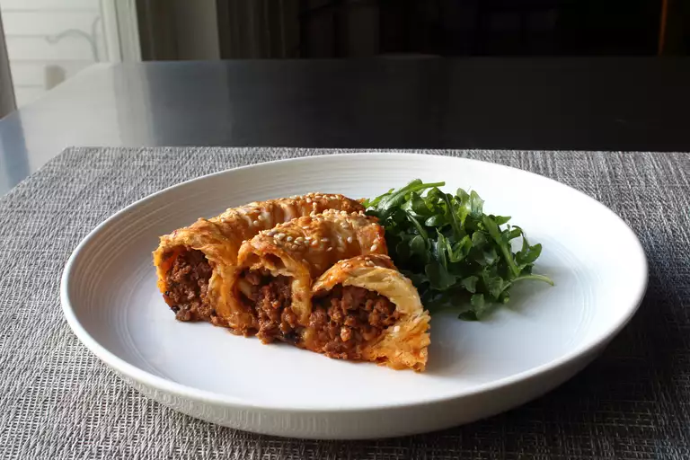

Lamb Börek

Description
For this lamb börek recipe, if you get your hands on the right ingredients — including about 12 good sheets of phyllo pastry — you'll find this savory pastry way easier to make than it appears.
It's all thanks to an intentionally soggy dough.
That's right! Lightly moisturizing phyllo with an egg, yogurt, and butter wash produces flexible, flavorful, and externally crisp layers upon baking.
Ingredients:
For the Lamb Filling:
- 2 tablespoons olive oil
- 1 large onion, diced
- 2 teaspoons salt
- 2 pounds ground lamb
- 4 cloves garlic, minced (Optional)
- 2 tablespoons currants
- 3 tablespoons toasted pine nuts
- 2 teaspoons ground cumin
- 1 teaspoon ground coriander
- 1 teaspoon ground cinnamon
- 1 teaspoon paprika
- 1 teaspoon freshly ground black pepper
- ½ teaspoon cayenne pepper
- ¼ teaspoon allspice
- 1 ½ cups tomato sauce
- ¼ cup water
For the Dough:
- 1 large egg
- 3 tablespoons full-fat plain Greek yogurt
- 2 tablespoons water
- 2 tablespoons butter, melted
- 12 sheets frozen phyllo dough, thawed, or as needed
- 2 teaspoons sesame seeds (Optional)
For the Yogurt Sauce:
- ½ cup plain Greek yogurt
- 2 tablespoons very finely sliced mint leaves
- 1 teaspoon lemon juice, or to taste
- 1 clove garlic, crushed (Optional)
- 1 teaspoon water, or as needed
- salt to taste
- 1 pinch cayenne pepper, or to taste
Directions:
-
Whisk yogurt, garlic, olive oil, lemon juice, ketchup, red pepper flakes, salt, cumin, black pepper, paprika, and cinnamon together in a large bowl.
- Place chicken thigh halves into the yogurt marinade and coat them thoroughly on all sides. Cover the bowl with plastic wrap and refrigerate, 2 to 8 hours.
- Preheat an outdoor grill for medium-high heat and lightly oil the grate.
- Using 2 skewers for each kebab, thread half of the chicken thighs onto each pair of skewers making a fairly thick "log" shape.
- Place kebabs on the preheated grill. Do not try to turn them until they begin to unstick from the grill, 3 or 4 minutes. Turn kebabs and grill the other side for 3 to 4 minutes. Continue cooking and turning until chicken is no longer pink in the center, about 6 minutes more. An instant-read thermometer inserted into the center should read at least 165 degrees F (74 degrees C).
Click here to jump to the top